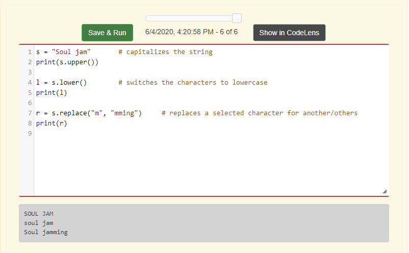

Mutability is when something can be changed. A sequence type that is mutable are lists, while strings and tuples are immutable.
The del function is used to delete a slice of a sequence or an item in a sequence. Just think of it as a delete button.
Objects are basically things, but in a Python expression, objects are usually seen on the right hand of the equal sign. And the object reference represents the identity that is used to locate the memory of the object and variable name of the program. So think of it as if you have a P.O box and you want to get your mail(objects), you need to know the number of the P.O box(object reference) to find your mail.
Aliasing is when the data value of a variable is assigned/copied into another variable. When using aliasing, the return value is a Boolean variable, instead of a string, list or tuple.
The append method is used to add items to the end of the sequence. It can add strings, integers, tuples and other sequence types.
The concatenate method is similar to the append method, that it adds items to a variety of sequence types, like strings and lists. The main differences are that when concatenating, the programmer needs to type the "+" symbol in between the sequences or data types that the programmer wants to add together. Lastly, in the concatenate method, the programmer needs to use the updating part of the accumulator pattern. Where the original sequence is declared, and then the original sequence adds to the data type or sequence, that the programmer wants to add to the original sequence.
Non-mutating methods are methods that can't change or mutate a sequence, but it can use the original sequence and create a new sequence based on the original sequence. Some of these non-mutating methods include: upper(), lower() and replace().
Using the accumulator pattern on lists is similar to how to use it with integers.
Using the accumulator pattern on strings is like using the accumulator pattern on lists, the only differences are that the accumulator variable needs to be a string, and that the easiest way of adding items to a string is through concatenating.